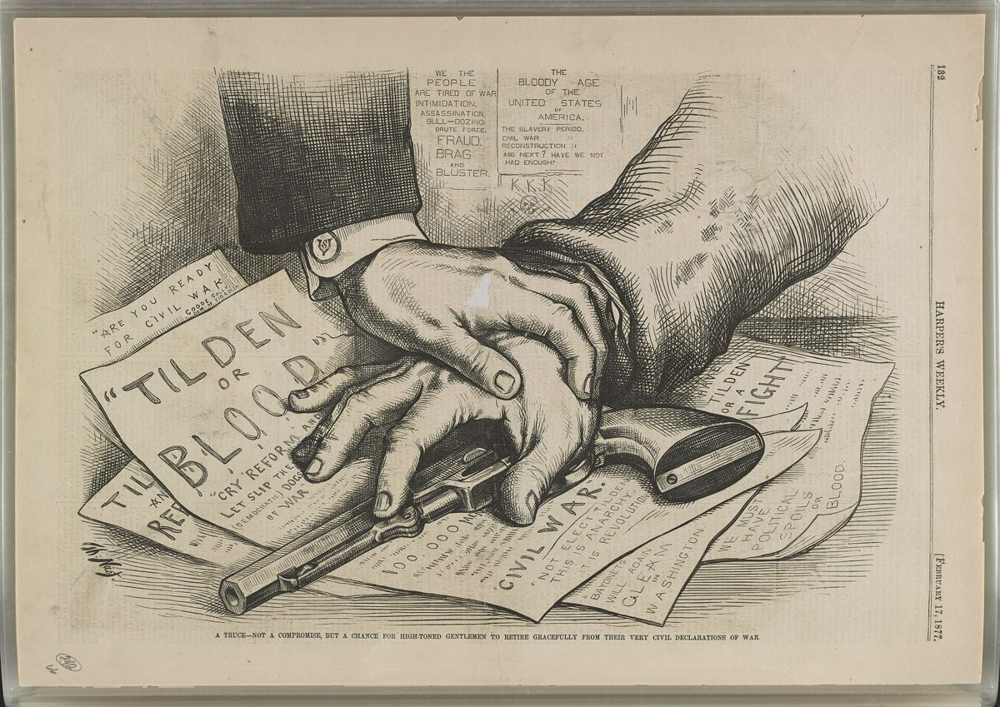

Lesson 5: Swing states: where the election is won
Recap check
- How many electors are there in total?
- How many electoral votes does a candidate need to win?
- When are the electors' votes counted by Congress?
Answer key
- 538.
- 270.
- In early January.
What we need to say
Today you need to predict what a candidate will get if she wins a swing state.
Words to say it
| Word | Meaning | Example |
|---|---|---|
| a swing state | a state where both parties can win | Pennsylvania is a swing state. |
| a safe state | a state where one party nearly always wins | California is a safe state for the Democrats. |
| the popular vote | the total votes of all the people | She won the popular vote. |
| to campaign | to travel and speak to win votes | He campaigned in Michigan. |
Use the words
Sort the words. Put each phrase in the right column: swing state or safe state.
- both parties can win
- the candidates visit it again and again
- one party nearly always wins
- the result is hard to predict
- the candidates rarely visit it
Answer key
- Swing state: both parties can win; the candidates visit it again and again; the result is hard to predict.
- Safe state: one party nearly always wins; the candidates rarely visit it.
More word practice
Matching: election night words
Match each word with its meaning.
- a battleground state
- turnout
- a margin
- a poll
- a recount
- a landslide
- a. a survey of what voters think
- b. a very big victory
- c. the share of people who vote
- d. a person who has not chosen yet
- e. counting the votes again
- f. another name for a swing state
- g. to change from one party to the other
- h. the difference between the winner and the loser
Answer key
- f
- c
- h
- a
- e
- b
Word families
Complete.
- to decide: a ______, undecided
- to predict: a ______
- to win: a ______, the ______ team
- to campaign: a ______ (person)
- to dispute: a ______ election
- to count: a ______ (counting again)
Answer key
- decision
- prediction
- winner, winning
- campaigner
- disputed
- recount
Read, one sentence per line
- In most states, everybody knows in advance which party will win: these are safe states.
- In a few states, both parties can win: they are swing states, and the candidates spend most of their time and money there.
- In 2024, seven states were called swing states by most news media: Arizona, Georgia, Michigan, Nevada, North Carolina, Pennsylvania and Wisconsin.
- Donald Trump won all seven and the election, with 312 electoral votes against 226 for Kamala Harris.
- A candidate can win the popular vote and lose the Electoral College: this happened in 2000, in 2016 and three times in the nineteenth century.
- In 1876, the result was disputed and a special commission chose Rutherford B. Hayes, although Samuel Tilden had more votes from the people.
Source: National Archives, 2024 results
Look at the diagram
Bar chart: the Electoral College in 2024
| Swing state (2024) | Electoral votes | Won by |
|---|---|---|
| Arizona | 11 | Trump |
| Georgia | 16 | Trump |
| Michigan | 15 | Trump |
| Nevada | 6 | Trump |
| North Carolina | 16 | Trump |
| Pennsylvania | 19 | Trump |
| Wisconsin | 10 | Trump |
| Total | ? (exercise) |
Source: National Archives, 2024 Electoral College results.
Look at the drawing

Picture labelling: A Truce, Not a Compromise (1877)
Look at Nast's cartoon. Find:
- two hands
- a weapon
- the newspaper title on the left
- a question on a paper
Answer key
- in the middle: one hand rests on the other
- a pistol (a revolver) under the hands
- Tilden or Blood
- Are you ready for civil war?
Tasks
- Read the bar chart: who passed the 270 line in 2024?
- Calculate the electoral votes of the seven swing states together (see the table).
- Say it: with the table, predict results for three swing states: If a candidate wins Pennsylvania, she will get nineteen electoral votes...
Grammar on the board
To predict a real possibility, we need the first conditional: If a candidate wins Pennsylvania, she will get nineteen electoral votes.
Listen to your teacher, then copy the board.
The first conditional; linking words of cause and consequence
- Rule
- If + present, will + verb.
If she wins Georgia, she will get sixteen votes. - Form
- If a candidate wins Pennsylvania, she will get nineteen electoral votes.
She will get nineteen votes if she wins Pennsylvania. (no comma) - Examples
- If she wins Georgia, she will get sixteen votes.
- If nobody gets 270 votes, the House will choose the president.
- Watch out
- If she will win Georgia ... → If she wins Georgia ...
- If he win → If he wins (third person -s).
- French and English
- French: Quand les bureaux fermeront, on comptera. English: When the polls close, they will count. No future after if or when.
Quick check
- If she ______ (win) Arizona, she ______ (get) eleven votes.
- Correct: If he will win, he will get ten votes.
- unless = ?
Answer key
- wins, will get
- If he wins, he will get ten votes.
- if not
Practise
Stage 1. Recognise
Which sentence is correct, a or b?
- a. If she wins Georgia, she will get sixteen votes. b. If she will win Georgia, she gets sixteen votes.
- a. If the race is close, the candidates will come back. b. If the race will be close, the candidates come back.
- a. If nobody gets 270, the House chooses will. b. If nobody gets 270, the House will choose the president.
- a. She will get eleven votes if she wins Arizona. b. She gets eleven votes if she will win Arizona.
- a. If you don't register, you won't vote. b. If you won't register, you don't vote.
Answer key
- a
- a
- b
- a
- a
Stage 2. Transform
Join the two sentences with if (first conditional).
- She wins Arizona. She gets eleven electoral votes.
- He wins Georgia. He gets sixteen electoral votes.
- She wins Michigan. She gets fifteen.
- He wins Nevada. He gets six.
- She wins North Carolina. She gets sixteen.
Answer key
- If she wins Arizona, she will get eleven electoral votes.
- If he wins Georgia, he will get sixteen electoral votes.
- If she wins Michigan, she will get fifteen.
- If he wins Nevada, he will get six.
- If she wins North Carolina, she will get sixteen.
Stage 3. Guided production
Finish the sentences with your own idea (first conditional).
- If a candidate wins all seven swing states, ...
- If the result is very close, ...
- If young people vote, ...
- If you are eighteen on Election Day, ...
- If you don't register, ...
Answer key
- Example: ... she will probably win the election.
- ... there will be a recount in some states.
- ... the candidates will talk more about education.
- ... you will be able to vote.
- ... you won't be able to vote (in most states).
A. Match the halves
Match the beginning and the end of each sentence.
- If he wins Arizona,
- If she wins Nevada,
- If the race is close,
- If nobody gets 270 votes,
- a. the candidates will visit the state again.
- b. she will get six electoral votes.
- c. the House will choose the president.
- d. he will get eleven electoral votes.
Answer key
- 1 d
- 2 b
- 3 a
- 4 c
B. Put the verbs in the right form
Present simple after if, will + verb in the other part.
- If a candidate ______ (win) Wisconsin, she ______ (get) ten electoral votes.
- If it ______ (rain) on Election Day, fewer people ______ (vote).
- The candidate ______ (lose) if she ______ (not / win) any swing state.
Answer key
- wins, will get
- rains, will vote
- will lose, does not win
Figure of speech
Figures of speech: metaphors of war, nature and play
Election words are often metaphors. A battleground state is a state where the parties fight like armies. A landslide is a huge victory, like a mountain falling. A swing state moves from one side to the other, like a swing in a playground. A wave election is a big movement towards one party.
- Which metaphor comes from war?
- Which comes from nature?
- Which comes from a playground?
Answer key
- battleground.
- landslide (and wave).
- swing.
Say it
Oral task: TV election night (one minute)
Steps
- Greet the viewers.
- Give the result of one state.
- Predict what will happen.
- Hand over to the studio.
- Good evening, I am live from ...
- The polls have just closed in ...
- If this result is confirmed, ...
- Back to you in the studio.
Model answer
Good evening, I am live from Philadelphia. The polls have just closed in Pennsylvania. The race is very close. If this result is confirmed, the winner will get nineteen electoral votes. Back to you in the studio.
Gap-fill worksheet
- A state can vote for either party.
- A state nearly always votes for the same party.
- In 2024, the winner got electoral votes.
- In 2016, the winner of the lost the election.
- In 2024, there were swing states.
- A is a survey of what voters think.
- A very big victory is a .
- When the votes are counted again, it is a .
- Another name for a swing state is a state.
- The share of people who vote is the .
Answer key
- swing
- safe
- 312
- popular vote
- seven
- poll
- landslide
- recount
- battleground
- turnout
Going further (optional)
Imaginary past: If + had + past participle, would have + past participle. If Gore had won Florida in 2000, he would have become president.
Translate into English
- Si elle gagne la Pennsylvanie, elle obtiendra dix-neuf grands électeurs.
- Si personne n'obtient 270 voix, la Chambre choisira le président.
Answer key
- If she wins Pennsylvania, she will get nineteen electoral votes.
- If nobody gets 270 votes, the House will choose the president.